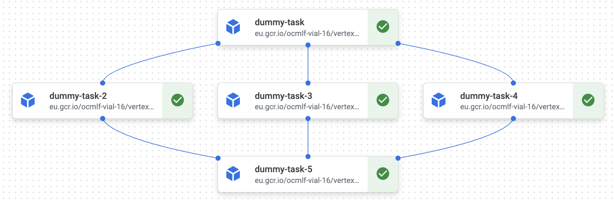

Parallelizing processings in pipelines
There are three ways to implement parallelization in Vertex Pipelines: single component multiprocessing, multiple parallel components, and multiple pipelines.
Multiple component multiprocessing (recommended)
Parallelizing processing in vertex pipelines by executing a component multiple times with different parameters usually works well with no additional overhead, and few surprises.
@component(base_image=f'europe-west1-docker.pkg.dev/{os.getenv("PROJECT_ID")}/vertex-pipelines-docker/vertex-pipelines-base:latest')
def dummy_task():
pass
@kfp.dsl.pipeline(name="fan-out-fan-in")
def pipeline():
first_task = dummy_task()
parallel_tasks = []
for _ in range(3):
parallel_task = dummy_task()
parallel_task.after(first_task)
parallel_tasks.append(parallel_task)
final_task = dummy_task()
for task in parallel_tasks:
final_task.after(task)
Produces the following pipeline: 
Single component multiprocessing
You can implement multiprocessing in python within a component to speed up its execution.
Multiprocessing vs Threading vs AsyncIO in python
??? example "Python parallelization with multiprocessing.Pool"
````python3
from multiprocessing import Pool
from random import randint
from time import sleep
def execute_task(arg1, arg2):
print(f"Executing task with args {arg1, arg2}")
result = randint(arg1, arg2)
sleep(result)
return result
if __name__ == '__main__':
tasks = [(1, 2), (3, 4), (5, 6)]
with Pool(processes=2) as pool:
result = pool.starmap(execute_task, tasks)
print(f"Results: {result}")
````
Multiprocessing on vCPUs (CPUs in the cloud) may not behave like it would on your local machine. Different vCPUs may actually belong to the same hardware CPU, negating any performance benefits.
Multiple pipelines
You can also run multiple pipelines with different parameters. That is a useful approach if your whole pipeline depends on a few global parameters like a product category, location, customer group, etc. The downside of this however is that it is going to be difficult to exchange information between pipelines, so avoid this approach unless you are sure your various pipeline will not need to.